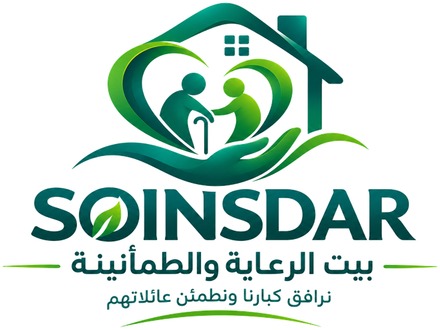

آخر تحديث: 25 نوفمبر 2026 | اسم التطبيق: SoinsDar (tn.careguard.app)
نجمع فقط البيانات التي يدخلها المستخدم طوعاً وبموافقته الصريحة لتشغيل خدمات التطبيق:
تُخزَّن البيانات عبر خوادم Supabase السحابية باتصال مشفّر (HTTPS/TLS) ونظام عزل الصلاحيات (Row Level Security) بحيث لا يطّلع على بيانات المسنّ إلا أفراد العائلة أو الممرضون الذين وافق المسنّ على ربطهم برمز الدعوة الخاص به. تُحذف الرسائل المباشرة والصوتية تلقائياً بعد 24–48 ساعة، وتُنظَّف سجلات البطارية والاطمئنان القديمة دورياً، ولا نبيع أو نشارك أي بيانات مع جهات إعلانية.
يمكنك في أي وقت تصدير بياناتك أو حذف حسابك وجميع بياناتك الصحية وسجلاتك نهائياً وبشكل فوري عبر زر «حذف بياناتي وحسابي نهائياً» داخل الإعدادات، أو بطلب الحذف عبر البريد الرسمي.
يقتصر دور تطبيق SoinsDar على توفير منصة تقنية للربط والتواصل بين طالب الخدمة (المسنّ أو المريض أو عائلته) والممرض المستقل عند طلب خدمة تمريض منزلية فقط. لا يُعد التطبيق جهة مشغّلة أو طرفاً في أي اتفاق بين الطرفين، ولا يتحمل أي مسؤولية عن تحديد الأتعاب أو تحصيلها أو أي خلافات مالية أو جودة التنفيذ أو أي التزامات أو أضرار قد تنشأ عن الزيارة التمريضية؛ إذ يتم الاتفاق على الأتعاب وتفاصيل الخدمة مباشرة وعلى مسؤولية الطرفين.
في حال إلغاء أو حظر حساب الممرض بسبب مخالفة القواعد أو تراكم شكاوى المستفيدين، لا يحق له المطالبة باسترجاع أي رسوم مدفوعة. كما يحق للمستفيد حظر ممرض لإخفاء طلباته المستقبلية، وعند بلوغ 3 مرات حظر يتم تعليق حساب الممرض تلقائياً لمدة 7 أيام.
Nous collectons uniquement les données fournies volontairement avec votre consentement explicite : nom, e-mail, téléphone, photo, données de santé (groupe sanguin, allergies, pathologies, médicaments, rendez-vous, hydratation), position GPS (pour SOS, zone du domicile et recherche d'infirmier), messages privés et justificatifs des infirmiers.
Les données sont hébergées sur les serveurs sécurisés de Supabase (chiffrement TLS et contrôle d'accès RLS) et partagées uniquement avec les proches ou infirmiers explicitement approuvés par le senior. Les messages directs et vocaux sont automatiquement supprimés après 24 à 48 heures. Aucune donnée n'est vendue à des tiers.
L'application SoinsDar agit uniquement comme plateforme technique de mise en relation entre le demandeur (senior, patient ou famille) et l'infirmier indépendant lorsqu'une visite est sollicitée. SoinsDar n'est ni un établissement de soins ni partie à l'accord entre les utilisateurs et décline toute responsabilité concernant les honoraires, paiements, litiges financiers ou l'exécution des soins convenus directement entre eux.
Vous pouvez exporter ou supprimer définitivement et immédiatement l'ensemble de votre compte et de vos données de santé depuis Paramètres → Supprimer mes données, ou en écrivant à jabeurj011@gmail.com.
tn.careguard.app) is a family care coordination and medication reminder tool only. It is not a certified medical device and does not replace professional medical advice, diagnosis, or emergency services. AI prescription scanning must always be verified with a doctor or pharmacist. Fall detection, geofencing, and alarms rely on device sensors, battery settings, and connectivity. In any emergency, contact local emergency services immediately (190 in Tunisia / 911 / 112).
With explicit user consent, SoinsDar stores only user-provided information: account profile (name, email, phone, optional photo), sensitive health reminders (blood type, allergies, conditions, medication schedules, medical appointments, hydration logs), GPS location (used solely for SOS alerts, home safe-zone departure alerts, and nearby nurse matching), temporary private messages, and nurse verification details.
Data is stored encrypted on Supabase cloud infrastructure protected by Row Level Security (RLS), accessible strictly to family members and nurses explicitly approved via the senior's invite code. Direct text/voice messages are automatically purged after 24–48 hours. We never sell user data or share it with advertisers.
SoinsDar acts solely as a technical platform connecting service requesters (seniors, patients, or families) with independent nurses when a nursing visit is requested. SoinsDar is not a healthcare provider or a party to any agreement between users and bears no responsibility for service fees, payments, financial disputes, care execution, or any obligations arising from the visit, all of which are agreed directly between the requester and the nurse.
Users can permanently and immediately delete their profile, health records, alerts, and links at any time from Settings → Delete my data, or request deletion by emailing jabeurj011@gmail.com.